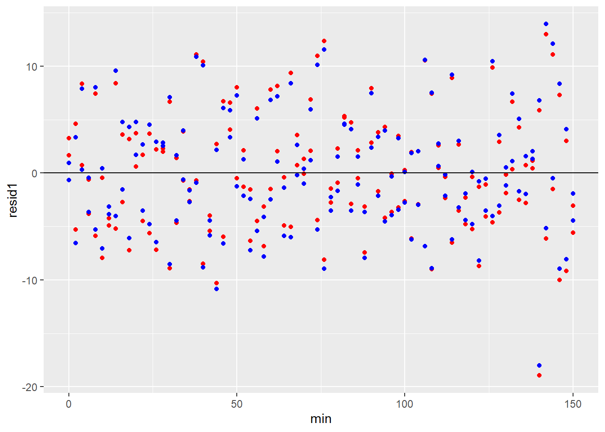

Chapter 38 Multiple regression
The previous chapters on linear and nonlinear regression deal with fairly specific use cases for regression. Specifically, you’ll note they involved only one predictor variable, which was continuous.
The goal of those procedures was to apply linear or nonlinear models to extract the regression model parameters. These parameters imply certain biological properties (e.g., \(K_D\), \(V_{max}\), kinetic rate constants, etc) that are of primary interest when using the method.
Linear regression is also useful to analyze continuous responses driven by discrete predictor variables. Furthermore, regression can be performed on responses associated with multiple predictor variables, some of which might be continuous and some of which might be discrete. Multiple regression or multiple linear regression is the most common jargon used to describe this extension of the linear regression to a comprehensive array of experimental designs. That’s the focus of this chapter.
We’ve actually been in this neighborhood previously, but called it other names. ANOVA and t-tests are regressions. Experimental biologists tend to use t-tests and ANOVA to analyze experiments that involve the use of discrete predictor variables. Why? Mostly out of habit. Those procedures are geared to alerting us to comparing effects of treatment and making decisions about whether an experiment “worked” or not.
But that same information lies within multiple regression analysis, which if used otherwise would generate identical answers and inference as do t-tests and ANOVA.
Multiple regression is used more commonly in the social and public health sciences. One reason is cultural, as for experimental biologists, that’s just the way things are done in those fields. In part it’s also because much of their data is observational. As such, they tend to deal with data sets that have many more predictor variables than what an experimental biologist can comfortably manipulate when testing hypotheses.
Furthermore, those fields emphasize weighing how much a predictor variable or a group of variables of interest contributes to a response while “controlling” for the effects of other variables. Arguably, there’s more of a focus on estimating variable effect sizes and less on comparing group effects to see if they differ. Multiple regression analysis lends itself better to this kind of inference than t-tests and ANOVA.
Throughout the semester we’ve been working through a heuristic that begins with deciding whether your response variable is continuous or discrete, and working from there to decide what to do. This is that:
For nominal response data use exact tests. For ordinal data use nonparametrics. For continuous response variables with two or fewer levels of a predictor variable, choose t-tests. For three or more levels, choose ANOVA if the predictor is factorial or regression if the predictor is equal interval. When measurements are intrinsically-linked analyze using paired/related/repeated measure versions of the tests.
Here’s an optional heuristic:
Analyze your data using a multiple regression model
Having said that, multiple linear regression takes some configuration to ensure it is cohesive with the overall experimental design. The functions, or at least their configurations, to use for non-guassian response variables (basically, those for “generalized” linear models) differs from those used for guassian variables.
The same goes for completely independent replicates versus replicates having paired/related/repeated measures. In regression jargon, data comprising the latter are called multiple linear “mixed” models. Conducting inference with the latter is much more difficult than for straight multiple linear models.
I’m going to focus below, first, on illustrating how an experimental biologist would use multiple regression when doing factorial experiments. Later, we’ll deal with more general uses for multiple regression modeling.
38.1 The linear regression model
Recall the linear model we discuses for a continuous response variable, \(Y\) and its predictor variable, \(X\): \[y_i=\alpha+\beta x_i +\epsilon_i \]
The \(\beta\) coefficient is a multiplier such that for every 1 unit change in the level of \(x_i\), \(y_i\) will change by \(\beta\). If \(\beta = 0\) there is no effect for any level of \(X\). In that case, the intercept \(\alpha\) estimates the value of the response variable \(Y\). Thus \(\alpha\) is equivalent to the population mean \(\mu\) for \(Y\) in the absence of \(X\). The residual error \(\epsilon_i\) is the residual difference between the values of \(y_i\) predicted by the model and the values for the data. These residuals are normally distributed and have a variance of \(\sigma^2\).
38.2 Multiple regression models
Multiple regression models have more than one predictor variables. For data containing \(i=1, 2..n\) independent replicates and \(j=1, 2..p\) predictor variables \[y_i=\alpha+\beta_1 X_{i1}+\beta_2 X_{i2}+...\beta_p X_{ip} +\epsilon_{i}\]
These can be either continuous or discrete, or any combination thereof.
\[X=\{nominal; eg, genotype(+/+, -/+, -/-) \\~\\ ordinal; eg, education level (HS, College, PostGrad\\~\\continuous; eg, time( 0, 1, 2, 4, ..30\ min)\}\]
38.3 Experimental multiple regression
Here’s a simulation of a simple factorial experiment, comparing responses of a stimulus and its negative control. Every measurement is independent of all other measurements. Thus, the sample has 6 independent replicates.
The predictor variable, FactorA, comes at two levels: control and stimulus. The response is a continuous variable. In your own mind substitute things for these. For me, the response is a transcription factor-driven luciferease activity, a negative control, and an agonist of a receptor is the stimulus.
We obtain the following random sample:
set.seed(1234)
factorA <- rep(c("control", "stimulus"), each=3)
response <- c(rnorm(3, 50, 1), rnorm(3,75,1))
data <- data.frame(factorA, response)
data## factorA response
## 1 control 48.79293
## 2 control 50.27743
## 3 control 51.08444
## 4 stimulus 72.65430
## 5 stimulus 75.42912
## 6 stimulus 75.50606The linear model for this experiment can be expressed as follows: \[response=control+\beta \times stimulus + residual\]
The model formula can be configured in several optional ways.
Adding the term +0 to the model formula in the lm function suppresses the intercept, allowing for a glance at the sample group means. These make sense with what was coded above.
model <- lm(response~factorA+0, data)
model##
## Call:
## lm(formula = response ~ factorA + 0, data = data)
##
## Coefficients:
## factorAcontrol factorAstimulus
## 50.05 74.53Knowing those group mean values helps to understand the meaning of the regression coefficients derived from the more conventional approach, which is not to suppress the intercept.
model <- lm(response~factorA, data)
model##
## Call:
## lm(formula = response ~ factorA, data = data)
##
## Coefficients:
## (Intercept) factorAstimulus
## 50.05 24.48The two coefficients above are estimates of the linear model’s parameters. The intercept and the factorAstimulus serve as estimates of the true population values for \(\control\) and \(\beta\) in our linear model, respectively.
We can rewrite the linear model with those estimates as \[y=50.05+24.48x\]
Since \(x\) represents a factorial variable, we just assign it a value of one, when a given factor level is present, or zero when it is not.
Thus, the response value in the presence of the stimulus is \(y=50.05+24.48=74.53\), which is the mean of the stimulus group.
When the stimulus is absent, than \(x=0\), and the linear model predicts a response of \(y=50.05\), which you can see is both the value of the intercept and the mean of the control group.
The coefficient for the stimulus term in this model formula is not the mean of the response to the stimulus, but is instead the difference between between the mean response to the stimulus and the mean response of the control.
Perhaps that reminds you of the numerator for the unpaired t-test, between two levels of a factor, control and stimulus? \[t=\frac{mean_{stimulus}-mean_{control}}{SE}\]
Let’s see if a t-test between stimulus and control gives us the same result as the linear regression. First, let’s complete the linear model analysis.
summary(model)##
## Call:
## lm(formula = response ~ factorA, data = data)
##
## Residuals:
## 1 2 3 4 5 6
## -1.2587 0.2258 1.0328 -1.8755 0.8993 0.9762
##
## Coefficients:
## Estimate Std. Error t value Pr(>|t|)
## (Intercept) 50.0516 0.8155 61.37 4.22e-07 ***
## factorAstimulus 24.4782 1.1534 21.22 2.91e-05 ***
## ---
## Signif. codes: 0 '***' 0.001 '**' 0.01 '*' 0.05 '.' 0.1 ' ' 1
##
## Residual standard error: 1.413 on 4 degrees of freedom
## Multiple R-squared: 0.9912, Adjusted R-squared: 0.989
## F-statistic: 450.4 on 1 and 4 DF, p-value: 2.914e-05Focus on the t-value for the factorAsstimulus coefficient. That t-test determines whether the coefficient value differs from zero. The coefficient value is, again, the difference between the mean responses of the control and the stimulus. We put that in the numerator and we put the SE of that difference in the denominator: \[t=\frac{24.4782}{1.1534}=21.22\]
Woohoo!
To be clear, when the predictor variable was continuous, we previously discussed these \(\beta\) coefficients as the “slope” of the linear regression line. That’s still the case here. R coerces a distance of 1 on the abscissa between the factorA values of control and stimulus. Thus, the difference between their means \(\Delta y\) divided by 1 \(\Delta x\) is the slope of an imaginary line between them.
Now let’s look at an unpaired t-test between the two factors.
t.test(response~factorA, data, var.equal=T)##
## Two Sample t-test
##
## data: response by factorA
## t = -21.224, df = 4, p-value = 2.914e-05
## alternative hypothesis: true difference in means is not equal to 0
## 95 percent confidence interval:
## -27.68045 -21.27600
## sample estimates:
## mean in group control mean in group stimulus
## 50.05160 74.52983Woohoo!
Except for the sign, the t-statistic -21.22 is identical to what was derived in the linear regression! This t-test is calculated as follows: \[t=\frac{50.05160-74.52983}{1.153353}=-21.22352\] That denominator is the standard error of the difference between means, which is not part of the t-test output, but can be calculated by hand by dividing the t-statistic value by the value for the difference between the means. You can see that it equals the coefficient value within the lm output.
Thus, by comparing lm and t.test output when run on the same data set we see that the same basic calculations are performed. They’re just presented differently.
Put another way, a t-test is actually a linear regression using a factorial variable at two levels.
The t.test output is more explicit about group means, and it provides a confidence interval for the difference between group means, while hiding its calculation for the standard error for that difference. The lm is explicit about the difference between the group means, and gives you that standard error, but only shows one group mean, that for the intercept. But they’re each making the same signal-to-noise calculation (t-test)!
The real differences are more related to interpretation. We use the t.test to ask a simple threshold question: Do the two groups differ? Yes or no?
The linear regression question is obviously related but just different enough to matter: How much does the stimulus affect the response relative to control?
That distinction is important. In the context of the linear model, the result says, “the stimulus accounts for 24.48 \(Y\) response units when controlled for the negative control group.
Thus, you can use multiple linear regression to run the equivalent of an unpaired t-test. But you can also use it to declare the effect of a factorial variable relative to a reference response. Most practitioners of multiple regression use it for the latter purposes.
38.3.0.1 Why is that sign negative in the t-test??
That’s just a quirk of R, but it’s an important quirk to understand.
When you give R these variables (at least in this format) it doesn’t know what factor level you want to list first. So by default it arranges groups alphanumerically.
The ‘c’ in control comes before the ‘s’ in stimulus, so R works with control first in both the linear regression and the t-test.
In the t-test, the calculation for the difference between groups is 2nd from 1st, or \(c-s\). Thus the negative value for the t-statistic.
The lm function is engineered to use the intercept as a reference. The linear regression assigns the lowest alphanumeric as the intercept, which it then subtracts from the mean response of the next variable, \(s-c\).
38.3.0.2 Specifying the intercept
Often you’ll name variables the way you like. But you’ll want to specify which group should be the intercept. Usually it’s your control condition. In regression jargon, it is the condition by which the other variables will be controlled for.
Using the relevel function provides you a bit more control to define the intercept value in linear regression compared to the default alphanumeric way.
Here’s some simulated data. The predictor variable, hart, has 4 levels: art, bart, cart, and dart. It’s on an alphanumeric scale. Smelly is the response variable. As you can see, each level of hart yields a different smelly response.
Even though I list the hart variable levels from d to a in the dataframe, R coerces them from a to d in the regression model, thereby forcing art to serve as the intercept
art <- rnorm(3, 50, 1)
bart <- rnorm(3, 100, 1)
cart <- rnorm(3, 0, 1)
dart <- rnorm(3, 200, 1)
hart <- rep(c("dart", "cart", "bart", "aart"), each=3)
data <- data.frame(hart, smelly=c(dart, cart, bart, art))
data## hart smelly
## 1 dart 199.88971451
## 2 dart 199.48899049
## 3 dart 199.08880458
## 4 cart -0.77625389
## 5 cart 0.06445882
## 6 cart 0.95949406
## 7 bart 99.10996217
## 8 bart 99.52280730
## 9 bart 99.00161356
## 10 aart 49.42526004
## 11 aart 49.45336814
## 12 aart 49.43554800lm(smelly~hart, data)##
## Call:
## lm(formula = smelly ~ hart, data = data)
##
## Coefficients:
## (Intercept) hartbart hartcart hartdart
## 49.44 49.77 -49.36 150.05What do those coefficient values mean? Well, they are all in units of smelly, referenced to the level of smelly in the presence of art. Because it begins with the letter ‘a’, art is the lowest alphanumeric value of the four predictors. Therefore, it is assigned as the intercept factor. In smelly units, the intercept is the response to art; bart is about 50 more than art; cart is about 50 less than art; and dart is about 150 more than art.
But let’s say we’d instead like to reference everything to the value of cart, which has a smelly value of 0. We’d use the relevel function for that.
First we have to define the variable hart as a factorial variable explicitly. Then, we relevel the values of hart so that cart is referenced as the intercept.
hart <- factor(hart) #don't skip this step, without it the next gives an error!!!
data$hart <- relevel(hart, ref="cart")
lm(smelly~hart, data)##
## Call:
## lm(formula = smelly ~ hart, data = data)
##
## Coefficients:
## (Intercept) hartaart hartbart hartdart
## 0.08257 49.35549 99.12889 199.40660The linear model for this data is \[smelly = -0.658+50.5\times art+100.1\times bart+200.6 \times dart\]
When \(art=bart=0\), \(smelly=200\)
The relevel is particularly useful manipulation for experimentalists, who often have explicit negative controls in their data sets. Social and public health scientists use relevel when they want to control the response for one of their variables. For example, when they want to control for the age of subjects, they relevel the age variable to the intercept. In that way, all other variable coefficients are relative to the magnitude of the effect of age.
38.3.1 A one factor experiment with 3 groups
T-tests are for comparing 2 groups. ANOVA’s are for comparing 3 or more groups. It turns out, you can use multiple linear regression to mimic an ANOVA test, too.
Let’s add one more level for the predictor variable (and its responses) to the experiment. Since it now has 3 groups, and 9 independent replicates, we shouldn’t do t-tests. We could do ANOVA, but we could also do a multiple regression model, too.
That model is \[response=control+\beta_1 stimulus1+\beta_2 stimulus2\]
set.seed(1234)
factorA <- rep(c("control", "stimulus1", "stimulus2"), each=3)
response <- c(rnorm(3, 50, 1), rnorm(3,75,1), rnorm(3, 175, 1))
data <- data.frame(factorA, response)
model <- lm(response~factorA, data)
summary(model)##
## Call:
## lm(formula = response ~ factorA, data = data)
##
## Residuals:
## Min 1Q Median 3Q Max
## -1.87553 -0.01280 0.01531 0.89930 1.03284
##
## Coefficients:
## Estimate Std. Error t value Pr(>|t|)
## (Intercept) 50.0516 0.6659 75.16 3.73e-10 ***
## factorAstimulus1 24.4782 0.9417 25.99 2.14e-07 ***
## factorAstimulus2 124.3865 0.9417 132.08 1.27e-11 ***
## ---
## Signif. codes: 0 '***' 0.001 '**' 0.01 '*' 0.05 '.' 0.1 ' ' 1
##
## Residual standard error: 1.153 on 6 degrees of freedom
## Multiple R-squared: 0.9997, Adjusted R-squared: 0.9996
## F-statistic: 9792 on 2 and 6 DF, p-value: 2.873e-11Notice how the coefficient value for stimulus2 is the difference between the mean response value for stimulus2 (~175 units) and the mean response value for control (~50 units). Each coefficient t-test asks whether the value of the coefficient differs from zero.
In linear regression with only a single predictor variable, that coefficient was the slope of a straight line through all the \(xy\) data pairs. In multiple linear regression you have to imagine separate straight lines connecting the mean intercept response value and the response values for each of the predictors.
We can compare the regression model output to that for an ANOVA test on the data. Here is the equivalent of a one-way completely randomized ANOVA.
Anova(model)## Anova Table (Type II tests)
##
## Response: response
## Sum Sq Df F value Pr(>F)
## factorA 26053 2 9792.1 2.873e-11 ***
## Residuals 8 6
## ---
## Signif. codes: 0 '***' 0.001 '**' 0.01 '*' 0.05 '.' 0.1 ' ' 1The F-test calculated in this ANOVA is the same as that calculated in the regression model. The F is a ratio of model variance to the residual variance. In the null F distribution, model and residual variance would be about equal. An extreme value of F means that the model explains a lot more of the variance than random residual differences. In this case, the model explains 9792.1 times more variance than does residual.
If we were making ANOVA inferences, we would conclude that factorA has an effect. There are some differences between the means of the three groups. If we were making a regression inference, we’d predict values for \(y\) on the basis of this model \[response = 50.05+24.48\times stimulus1+124.39\times stimulus2\] and we’d say that stimulus1 and stimulus 2 cause 24.48- and 124.39-more units of response compared to control.
The t-test results also allow us to conclude the two groups differ from the control.
38.3.2 A two factor experiment with 6 groups
Now we’ll add a second factorial variable, factorB, to the design above. FactorB has two levels. The simulated design is akin to a two-way completely randomized ANOVA. We’ll also simulate in an interaction effect between the two variables.
set.seed(1234)
factorA <- rep(rep(c("control", "stimulus1", "stimulus2"), each=3), 2)
factorB <- rep(c("cofactor1", "cofactor2"), each=9)
response <- c(rnorm(3, 50, 1),
rnorm(3,75,1),
rnorm(3, 175, 1),
rnorm(3, 100, 1),
rnorm(3,300,1),
rnorm(3, 700, 1)
)
data <- data.frame(factorA, factorB, response)There are a handful of linear models we could run on this. They should be scientifically driven. Since we wouldn’t design an experiment like this unless we thought there would be an interaction between the two factors, we’ll focus on that. The coefficients for the interacting model would serve as effect sizes to describe the level of interaction that occurs.
Coefficients can be confusing. Here’s a way to clarify what’s going on. It turns out, a model’s intercept is calculated differently, depending upon how the model is defined.
First, a factor-less model. This output represents the grand mean of all the values in the data.
lm(response~1, data)##
## Call:
## lm(formula = response ~ 1, data = data)
##
## Coefficients:
## (Intercept)
## 233Next is a linear model just for the 3 levels of factorA. The intercept is the mean for all the data in the control groups under both cofactor1 and cofactor2.
lm(response~factorA, data)##
## Call:
## lm(formula = response ~ factorA, data = data)
##
## Coefficients:
## (Intercept) factorAstimulus1 factorAstimulus2
## 74.63 112.67 362.33Here’s a linear model for the second variable alone. The intercept represents the mean of all the groups under cofactor1
lm(response~factorB, data)##
## Call:
## lm(formula = response ~ factorB, data = data)
##
## Coefficients:
## (Intercept) factorBcofactor2
## 99.67 266.59Now we have the linear model for the two factors combined. This intercept is the sum of the intercepts for factorA and factorB, less the grand mean for all the data. The negative value is a hint of an interaction effect between the two factors.
lm(response~factorA+factorB, data)##
## Call:
## lm(formula = response ~ factorA + factorB, data = data)
##
## Coefficients:
## (Intercept) factorAstimulus1 factorAstimulus2 factorBcofactor2
## -58.66 112.67 362.33 266.59Finally we have the full linear model for the two factors combined, including an interaction term. Here the intercept is the value of control. All coefficients values are the difference between their absolute effect sizes and the value for control (intercept).
lm(response~factorA*factorB, data)##
## Call:
## lm(formula = response ~ factorA * factorB, data = data)
##
## Coefficients:
## (Intercept) factorAstimulus1
## 50.05 24.48
## factorAstimulus2 factorBcofactor2
## 124.39 49.16
## factorAstimulus1:factorBcofactor2 factorAstimulus2:factorBcofactor2
## 176.39 475.89Since the values each discrete predictor variable level can take on is either 1 (if present) or 0 (if not), all of these coefficient values serve as an effect size for the indicated group, relative to control (intercept).
The linear model is \[Y=50.05+24.48\times stimulus1+124.39\times stimulus2+49.16\times cofactor2+176.39\times stimulus1/cofactor2 +475.89\times stimulus2/cofactor2\]
summary(lm(response~factorA*factorB, data))##
## Call:
## lm(formula = response ~ factorA * factorB, data = data)
##
## Residuals:
## Min 1Q Median 3Q Max
## -1.87553 -0.18276 -0.00135 0.37825 1.03284
##
## Coefficients:
## Estimate Std. Error t value Pr(>|t|)
## (Intercept) 50.0516 0.5260 95.15 < 2e-16 ***
## factorAstimulus1 24.4782 0.7439 32.91 3.93e-13 ***
## factorAstimulus2 124.3865 0.7439 167.21 < 2e-16 ***
## factorBcofactor2 49.1599 0.7439 66.08 < 2e-16 ***
## factorAstimulus1:factorBcofactor2 176.3929 1.0520 167.67 < 2e-16 ***
## factorAstimulus2:factorBcofactor2 475.8913 1.0520 452.36 < 2e-16 ***
## ---
## Signif. codes: 0 '***' 0.001 '**' 0.01 '*' 0.05 '.' 0.1 ' ' 1
##
## Residual standard error: 0.9111 on 12 degrees of freedom
## Multiple R-squared: 1, Adjusted R-squared: 1
## F-statistic: 2.183e+05 on 5 and 12 DF, p-value: < 2.2e-16The model summary recapitulates the coefficient values. Using this configuration, all are relative to the intercept. Each t-tests determines whether that coefficient differs from zero.
In this case, all coefficients differ from zero, meaning the factor level corresponding to each has some effect on the response over and beyond that of the control level. Note that these p-values are NOT adjusted for multiple comparisons.
These coefficient values can be used to make declarative statements about effect sizes in response to specific levels of the variables: “In the presence of cofactor1, Stimulus1 and 2 cause a 24 and 124 unit response, respectively, over control. But in the presence of cofactor2, they cause 176- and 475-unit responses, indicating a synergy interaction.”
Or something like that.
The F test is a ratio of the variance associated with the model to the residual variance. It’s not particularly useful other than to announce that the model explains the data better than does residual variation.
Passing the model into an the Anova function from the car package provides F tests for the main effects of each factor and for the interaction, providing the familiar ANOVA way of interpreting the data if desired.
Anova(lm(response~factorA*factorB, data))## Anova Table (Type II tests)
##
## Response: response
## Sum Sq Df F value Pr(>F)
## factorA 412618 2 248548 < 2.2e-16 ***
## factorB 319811 1 385289 < 2.2e-16 ***
## factorA:factorB 173643 2 104597 < 2.2e-16 ***
## Residuals 10 12
## ---
## Signif. codes: 0 '***' 0.001 '**' 0.01 '*' 0.05 '.' 0.1 ' ' 1All in all, multiple regression is an alternative way to conduct analyses on data for which every replicate is independent from all others, such as in unpaired/completely randomized designs that are otherwise performed using t-tests or ANOVA.
38.4 Multiple linear mixed models
Multiple regression can also be useful for analyzing data within which measurements are intrinsically-linked, such as in experiments that have paired/related/repeated measures.
There are three key distinctions from the multiple regression above. First, we’ll need to use the lmer function in the lme4 package (or the lme function in the nlme package), rather than lm in R’s base stats package. These use maximum likelihood estimation to calculate coefficient values, rather than least squares.
Second, is cutting through the jargon.
Third, it is dramatically more difficult to extract inference from mixed multiple regression modeling than from multiple regression modeling. The experimental researcher is probably better off sticking to ANOVA. There are exceptions to this.
The coefficients solved for through linear regression are called the “fixed effects” of a linear model. They correspond to the true values in the sampled population the alpha and the beta. Recall that models are perfect data are not. So they are the perfect part of the model, making them “fixed”.
The error term \(\epsilon\) accounts for the extent by which actual data diverge from that predicted by these fixed effects. \(\eplison\) exists to account for all the other unknown factors that conspire to influence a response.
But we can control for some of this when we take multiple measures on each replicate. In regression jargon, the replicate-to-replicate variation is called the random effect.
So “mixed” multiple linear regression models have a mixture of terms for the fixed and for the random effects within an experiment. Mixed models are therefore the linear regression analogs of paired/related measure designs.
The sleepstudy data set in the lme4 package is one such mixed effect study. The study measured reaction times (in ms) under conditions of worsening sleep deprivation. Repeated reaction time measurements were taken from each of 18 subjects over a 9 day period of sleep deprivation. These 18 subjects represent a random sample of the type of person who might become sleep deprived.
Here’s a chart showing how it went for each subject. For some, reaction times are noticeably longer. For others, reaction lengthening is less bloody obvious. For subject 335 sleep deprivation might have slightly quickened reaction times!
ggplot(sleepstudy, aes(Days, Reaction))+
geom_point()+
geom_smooth(method="lm", se=F)+
facet_wrap(~Subject)
Here’s the question everybody wants answered from this study: What effect does sleep deprivation have on reaction time?
Note, the question is NOT, “is the effect of sleep deprivation on reaction time”significant?“” That’s much less compelling than actually quantifying the effect size.
If we completely ignore the presumed correlation within the repeated measurements within each subject we would use the lm function in R’s base stats package.
summary(lm(Reaction ~ Days, sleepstudy))##
## Call:
## lm(formula = Reaction ~ Days, data = sleepstudy)
##
## Residuals:
## Min 1Q Median 3Q Max
## -110.848 -27.483 1.546 26.142 139.953
##
## Coefficients:
## Estimate Std. Error t value Pr(>|t|)
## (Intercept) 251.405 6.610 38.033 < 2e-16 ***
## Days 10.467 1.238 8.454 9.89e-15 ***
## ---
## Signif. codes: 0 '***' 0.001 '**' 0.01 '*' 0.05 '.' 0.1 ' ' 1
##
## Residual standard error: 47.71 on 178 degrees of freedom
## Multiple R-squared: 0.2865, Adjusted R-squared: 0.2825
## F-statistic: 71.46 on 1 and 178 DF, p-value: 9.894e-15This shows the average reaction time on day zero is 251.40 ms, and it lengthens by 10.47 ms each day of the sleep deprivation protocol. Both of these estimates differ from zero. The F test is for the main effect of Days and has an extreme value. Thus, the length of sleep deprivation changes reaction time. This variable accounts for about 28% of the overall variation in the data.
Taken together, we can conclude that a period of sleep deprivation extends reaction times by about 10 ms daily.
\[Reaction=251.4+10.4\times Days\]
But we shouldn’t ignore the repeated measures of the design. And it would also be nice to have some estimate for the standard deviation of the effect.
For those reasons we run a mixed model regression to account for the random effect of the 18 subjects.
mm1 <- lmer(Reaction ~ Days + (Days|Subject), REML=F, sleepstudy)
summary(mm1)## Linear mixed model fit by maximum likelihood ['lmerMod']
## Formula: Reaction ~ Days + (Days | Subject)
## Data: sleepstudy
##
## AIC BIC logLik deviance df.resid
## 1763.9 1783.1 -876.0 1751.9 174
##
## Scaled residuals:
## Min 1Q Median 3Q Max
## -3.9416 -0.4656 0.0289 0.4636 5.1793
##
## Random effects:
## Groups Name Variance Std.Dev. Corr
## Subject (Intercept) 565.52 23.781
## Days 32.68 5.717 0.08
## Residual 654.94 25.592
## Number of obs: 180, groups: Subject, 18
##
## Fixed effects:
## Estimate Std. Error t value
## (Intercept) 251.405 6.632 37.906
## Days 10.467 1.502 6.968
##
## Correlation of Fixed Effects:
## (Intr)
## Days -0.138The mixed model regression generates the identical estimates for the fixed effects as previously. What we have now that we didn’t have before are standard deviation estimates for both the slope and the intercept coefficients. Those are found in the random effect output in the summary.
So we would conclude that the reaction time is 251.4+/-24.7 ms, which increases with sleep deprivation by 10.47+/-5.92 ms daily.
Unlike linear modeling, linear mixed modeling doesn’t generate F tests. That’s mostly due to the fact that underlying maximum likelihood estimation doesn’t lend itself to that. As far as inference goes, we have t values but not t-tests (the df is missing!!)
38.5 Multiple regression of observational data
The Western Collaborative Group Study data below is epidemiological. The data are derived from cases taken in 1960-61. The focus was to study the relationship between behavior and cardiovascular disease risk in middle aged men. The data set below is comprised of over three thousand cases with 14 variables.
Since I know a little bit about blood pressure, but mostly because blood pressure is a continuous variable, I thought it would be interesting to explore how the various cofactors might influence systolic blood pressure. So I’ll use systolic blood pressure as a response variable in the regressions below. Some of the other variables will be used as predictor variables.
I should make an important point. In practice you don’t just crack open and explore a data set willy nilly. I’m not the PI of the study. I’m just writing another chapter on statistical methods using data to illustrate statistical concepts. The authors of the study were testing the hypothesis that the so-called type-A personality was at higher risk of coronary heart disease. They are bound by restricting their analysis to testing preset hypotheses.
These systolic blood pressure readings are just a variable that were vacuumed up in the study design, but were not hypothesized as the intended response variable.
data(wcgs)
head(wcgs)## id age0 height0 weight0 sbp0 dbp0 chol0 behpat0 ncigs0 dibpat0 chd69
## 1 2001 49 73 150 110 76 225 2 25 1 0
## 2 2002 42 70 160 154 84 177 2 20 1 0
## 3 2003 42 69 160 110 78 181 3 0 0 0
## 4 2004 41 68 152 124 78 132 4 20 0 0
## 5 2005 59 70 150 144 86 255 3 20 0 1
## 6 2006 44 72 204 150 90 182 4 0 0 0
## typechd time169 arcus0
## 1 0 1664 0
## 2 0 3071 1
## 3 0 3071 0
## 4 0 3064 0
## 5 1 1885 1
## 6 0 3102 0fit <- lm(sbp0~age0+height0+weight0+
chol0+ncigs0+
dibpat0+chd69,
wcgs)
summary(fit)##
## Call:
## lm(formula = sbp0 ~ age0 + height0 + weight0 + chol0 + ncigs0 +
## dibpat0 + chd69, data = wcgs)
##
## Residuals:
## Min 1Q Median 3Q Max
## -36.215 -9.675 -1.969 7.325 101.331
##
## Coefficients:
## Estimate Std. Error t value Pr(>|t|)
## (Intercept) 122.06552 7.99171 15.274 < 2e-16 ***
## age0 0.40531 0.04625 8.764 < 2e-16 ***
## height0 -0.85157 0.11915 -7.147 1.10e-12 ***
## weight0 0.23450 0.01423 16.477 < 2e-16 ***
## chol0 0.02621 0.00593 4.420 1.02e-05 ***
## ncigs0 0.04247 0.01766 2.404 0.0163 *
## dibpat0 1.16580 0.50899 2.290 0.0221 *
## chd69 4.24199 0.94327 4.497 7.14e-06 ***
## ---
## Signif. codes: 0 '***' 0.001 '**' 0.01 '*' 0.05 '.' 0.1 ' ' 1
##
## Residual standard error: 14.06 on 3134 degrees of freedom
## (12 observations deleted due to missingness)
## Multiple R-squared: 0.1295, Adjusted R-squared: 0.1275
## F-statistic: 66.59 on 7 and 3134 DF, p-value: < 2.2e-16The model for systolic blood pressure level, in mmHg predicts \[sbp=122+0.4/yr-0.85/inch+0.23/pound+0.026/mg/dl+0.04/cig/day+1.16\times typeA+4.24\times coronary event\]
38.5.0.1 Sandbox
Here’s a simulated sample. The causes of the outcome are known. Only the multiple model predicts the outcome accurately. Knowing what covariates to include in the model is not straightforward.
set.seed(123)
covariate <- sample(0:1, 100, replace=TRUE)
exposure <- runif(100,0,1)+(0.3*covariate)
outcome <- 2.0+(0.5*exposure)+(0.25*covariate)
lm(outcome~exposure)##
## Call:
## lm(formula = outcome ~ exposure)
##
## Coefficients:
## (Intercept) exposure
## 1.9888 0.6965lm(outcome~exposure+covariate)##
## Call:
## lm(formula = outcome ~ exposure + covariate)
##
## Coefficients:
## (Intercept) exposure covariate
## 2.00 0.50 0.25